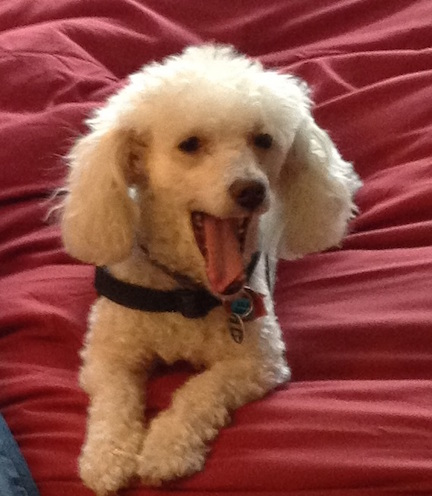

I am a native New Yorker who is currently a development professional at NYC's largest emergency food program and mastering web development at General Assembly. I also love to spend time with my partner, friends and family, and my favorite guilty pleasure.*
I want to use my website development, content management, and project management skills to create accessible websites for non-profits that help them raise money, increase their visibility, and advance their mission. I'm also interested in companies that provide digital services to progressive non-profits, for example
M&R.
I'm interested in education, healthcare, the environment, arts and culture, social services, umbrella organizations like United Way, UJA and the Foundation Center, disability and LGBT rights, and animal welfare organizations like ASPCA. Positions I could see myself in are Website Developer, Content Manager and Web Master.
*Favorite Guilty Pleasure: 